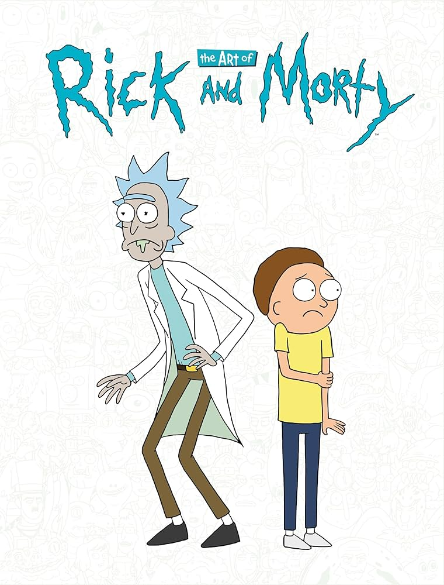

<main class="background-img">
    <div class="content-cont">
        <h1>Rick & Morty</h1>
        <div class="inside-cont">
            <div class="front-img">
                
            </div>
            <div>
                <p class="text-intro">Rick and Morty is an animated science fiction comedy series that follows the misadventures of a cynical, alcoholic genius scientist named Rick Sanchez and his good-hearted but anxious grandson Morty. Together, they travel across dimensions and alternate realities, blending dark humor with satirical takes on science, family, and society.</p>
            </div>
        </div>
        
        <!-- carousel -->
        <div class="box-carousel">
            <div>
                <h2 class="title-c">Characters</h2>
            </div>
            <div id="carouselExampleIndicators" class="carousel slide">
                <div class="carousel-inner">
                    @for (personaje of todos; let i = $index; track personaje) {
                        @if (i==0) {
                        <div class="carousel-item active">
                            
                        </div>
                    }@else{
                        <div class="carousel-item">
                            
                        </div>
                    }
                }
                </div>
                <button class="carousel-control-prev" type="button" data-bs-target="#carouselExampleIndicators" data-bs-slide="prev">
                    <span class="carousel-control-prev-icon" aria-hidden="true"></span>
                    <span class="visually-hidden">Previous</span>
                </button>
                <button class="carousel-control-next" type="button" data-bs-target="#carouselExampleIndicators" data-bs-slide="next">
                    <span class="carousel-control-next-icon" aria-hidden="true"></span>
                    <span class="visually-hidden">Next</span>
                </button>
            </div>
        </div>
    </div>
</main>


